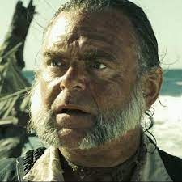

Jack Sparrow
Jack Sparrow Journey
Black Pearl |
Jack Subordinates

Joshamee Gibbs was the longtime comrade and devoted First Mate of Captain Jack Sparrow. Teller of tales, handy with a bottle, this veteran sea dog was truly a skillful sailor who cleverly navigated his way through many deadly situations. The often-soused but always reliable Gibbs had an encyclopedic knowledge in all manner of pirate lore of the seven seas and an epicurean taste for rum.
Once a sailor in His Majesty's Royal Navy, and later an enthusiastic pirate, Joshamee Gibbs was a man who knew his way across every ocean, and into every pub. Gibbs was Jack Sparrow's most trusted comrade, one who cared as much about the Black Pearl as Jack himself did. On several occasions, Gibbs served under Jack's nemesis and rival, Hector Barbossa, but was never truly loyal to him compared to his true loyalty to Jack.